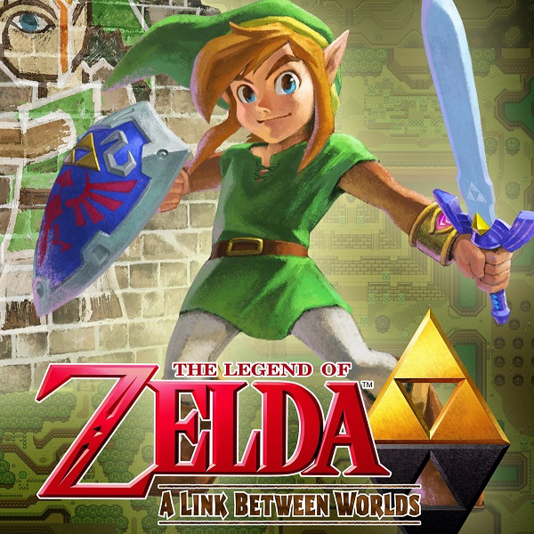

Este é simplesmente um dos melhores jogos de Zelda que já joguei, desde os santuários, a exploração do mundo aberto, até cada uma das 900 sementes de korok. Gostei de tudo e honestamente, este é o melhor até agora, embora este jogo não seja perfeito, não merece menos que 5 estrelas. Dos 120 santuários serem demais, bem como das 900 sementes de korok, e como existem apenas 4 masmorras principais (The Divine Beasts), e como a história é pequena comparada ao jogo real e tudo o que há para fazer, e que há menos enredo do que a maioria dos jogos The Legend of Zelda antes dele, são algumas das coisas que tenho visto as pessoas chateadas nos anos desde que o botw foi lançado. As coisas boas deste jogo são quase tudo, a história pode não ter sido expansiva, mas é o que lhe dá mais opções, sua própria maneira de fazer as coisas e progredir no jogo, é também por isso que o DLC foi bom, o Master Mode fornece uma dificuldade mais difícil para aqueles que desejam um desafio, The Master Trials como uma forma de atualizar a força e a durabilidade da Master Sword e The Champions Ballad para aqueles que desejam mais história e outras coisas para fazer. Ok, agora sobre as Korok Seeds, se eu ainda não te convenci a comprar ambos, então e se eu dissesse que você pode aumentar seu armazenamento de armas, como arcos, armas corpo a corpo e arcos?, sim, você pode aumentar o seu estoque de armas em 19 slots começando em 1 sementes de korok dobrando o preço cada vez que você o aumenta, e você pode aumentar o estoque de arco em 13 e os escudos em 20, uma boa quantia se você me perguntar. Em suma, apesar das críticas ruins, Botw é realmente um jogo incrível e é um dos melhores jogos que já joguei com uma das melhores trilhas sonoras que já ouvi, e vale o dinheiro, e a classificação de 5 estrelas .